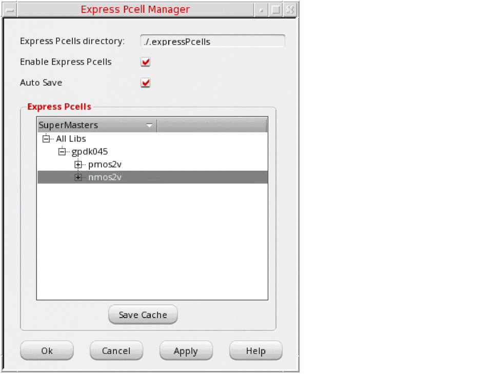

8
Express Pcells
This chapter covers the following topics:
- Overview of Express Pcells
- Express Pcell Plug-In for Non-Virtuoso and Third Party Applications
- Requirements for Using the Express Pcell Feature
- Use Model of Express Pcell Management
- Managing the Express Pcell Cache
- Cache Merge Utility
- Environment Variable to Control Express Pcell Proliferation Message
- Exclude Specified Pcells from the Express Pcell Save or Read Operation
Overview of Express Pcells
Traditional SKILL Pcell submasters, once evaluated, reside in memory and are not saved to disk (see Creating SKILL Parameterized Cells for more information). This means that the Pcells must be evaluated every time a design is opened, which can become a performance bottleneck in designs that contain a large number of complex Pcell instances.
The Express Pcell feature, which is available in the Virtuoso environment, maintains a cache of pre-evaluated Pcells on disk, meaning that Pcell code does not need to be evaluated every time a design is opened. This offers a significant performance boost not only for designs that contain a large number of Pcell instances, but also for designs with modest numbers of instances of complex Pcells involving computationally intensive SKILL code.
Express Pcell Plug-In for Non-Virtuoso and Third Party Applications
Pcells in the Virtuoso design environment are predominantly written using SKILL and are evaluated using a SKILL Pcell evaluator that is not available outside the Virtuoso design environment. This means that these SKILL Pcells cannot easily be read or used outside the Virtuoso design environment. Non-Virtuoso Cadence applications and third-party applications rely on other alternatives for SKILL Pcell evaluation. This alternative data flow channel between the applications and OpenAccess can be time-consuming and not entirely seamless.
The Express Pcell feature is available on OpenAccess as a SKILL Pcell plug-in (*.so and *.plg files). The plug-in leverages the interoperability offered by OpenAccess to allow non-Virtuoso Cadence and third party applications to access Express Pcell generated data saved on OpenAccess without having to translate it. The plug-in enables these applications to access the pre-evaluated Pcell submasters resulting in seamless read-interoperability of SKILL Pcells. The plug-in also provides some limited write-interoperability, so that you can edit the container of Pcell instances. For example, third party applications (such as a router or a verification tool) can open a Virtuoso-generated OpenAccess design safely and add markers or perform routing in them directly.
Requirements for Using the Express Pcell Feature
Virtuoso Design Environment Application
To use the Express Pcell feature in the Virtuoso design environment, you require:
- At least OpenAccess version OA 22.04.001
- Cadence Design Framework II (License Number 111)
-
The
CDS_ENABLE_EXP_PCELLvariable to be set totrue.
If the required license is not available or cannot be checked out, the Express Pcell feature is disabled for that particular Virtuoso session.
Non-Virtuoso Cadence Application
A non-Virtuoso Cadence application checks out the VLS L license.
Third Party Application
Third party applications check out the VLS L license. The following files are required for the successful use of the plug-in by any third party application:
For information about how to install the plug-in, see Installing the Express Pcell Plug-In for Non-Virtuoso or Third Party Applications.
libcdsSkillPcell.so is compiled against libstlport.so. This can lead to drop-in compatibility issues if used with an OpenAccess application compiled against libcstd.so. To avoid such issues while using the plug-in’s shared library with a non-DFII OpenAccess application, both the plug-in’s shared library and the application must be compiled against the same C++ library, libstlport.so or libCstd.so. The following additional 64bit plug-in library version is also available for non-DFII OpenAccess applications compiled with the standard C++ library (libcstd.so):
cdsSkillPcell/lib/64bit/libcdsSkillPcell_nonSTLport.so
These plug-in libraries are available in the Express Pcell Plugin Kit. To use these libraries, you must set up the environment by changing the soft link in either tools/lib or tools/lib/64bit to the corresponding non-stlport library available in tools/cdsSkillPcell/lib. If you do not have permission to change the link in <install_dir>/tools/lib, you can create a soft link for libcdsSkillPcell.so ==> <install_dir>/tools/cdsSkillPcell/lib/libcdsSkillPcell_nonSTLport.so in a separate directory and specify that directory in the LD_LIBRARY_PATH to be read by the non-DFII OpenAccess application.Use Model of Express Pcell Management
This section explains how applications both inside and outside the Virtuoso design environment use the Express Pcell cache.
Inside the Virtuoso Design Environment
The following figure shows how Virtuoso design environment applications use the Express Pcell cache.
When you open a cellview containing a Pcell instance for the first time, a Pcell submaster is created in memory by the SKILL Pcell evaluator.
When requested by the OpenAccess Pcell evaluator to populate the submaster of a Pcell instance, the Virtuoso SKILL Pcell evaluator sends a request to the Express Pcell framework, which in turn checks for the existence of the requested submaster in the cache. If the submaster exists, it is read from the cache. If it does not exist, it is created by the usual SKILL Pcell evaluation process in the Virtuoso design environment.
You can save the evaluated submasters using the File – Save command (see Auto Save). This generates a cache of the Pcell submasters in the specified Express Pcell directory (CDS_EXP_PCELL_DIR).
You can also cache the Pcell submasters that are available in memory by clicking Save Cache in the Express Pcell Manager form.
Outside the Virtuoso Design Environment
The Express Pcell plug-in provides read access to the cache data to non-Virtuoso Cadence applications as well as third party applications on OpenAccess. In this way, these applications can also access the submasters already evaluated by Virtuoso design environment applications and stored in the cache.
This model provides seamless read interoperability of SKILL Pcells to non-Virtuoso Cadence and third party applications.
Managing the Express Pcell Cache
By default, intermediate Express Pcell files are stored in a .expressPcells directory, which is created inside the current working directory. This directory maintains a cache of pre-evaluated Pcells on the disk. This means that the Pcell code does not need to be evaluated every time a design is opened. This offers a significant performance boost not only for designs that contain a large number of Pcell instances but also for designs with modest numbers of instances of complex Pcells involving computationally intensive SKILL code.
Using Environment Variables
Use the following shell environment variables to manage the Express Pcell cache. These variables are read during Virtuoso startup and must therefore be set before you launch the application.
-
CDS_ENABLE_EXP_PCELL
Controls the caching of evaluated SKILL Pcells. The default value of this variable in a Virtuoso session is different from its default value when used with a non-Virtuoso or third party application.
In a Virtuoso session
By default, this variable is set tofalsein the Virtuoso environment, which means that SKILL Pcells are evaluated every time a design is loaded in a Virtuoso session. To use the Express Pcell feature, set this variable totruebefore starting the session.
In a non-Virtuoso session
The default value of this variable istruewhen the Express Pcell plug-in is used with a non-Virtuoso or third party application. Assuming that the plug-in files (.plgand.so) are correctly installed (see Installing the Express Pcell Plug-In for Non-Virtuoso or Third Party Applications), available Pcell submasters are automatically read from the cache during an OpenAccess Pcell evaluator call. You can change this default behavior by setting the variable tofalsebefore starting the non-Virtuoso or third party application. -
CDS_EXP_PCELL_DIR
Specifies the directory to be used for caching Pcells. You can specify either an absolute path or a path relative to your current working directory.
Using this environment variable allows multiple users or Virtuoso sessions to point to the same Express Pcell directory for concurrent read/write access. This helps in maintaining a single central Express Pcell cache for a team of layout designers working on a single design project, thereby avoiding duplicate or inconsistent cached Express Pcell data in any private directories. In addition, it ensures the availability of the complete cache at a single location and therefore avoids the need to regenerate the entire Express Pcell cache for the entire chip or block.The recommended umask value is 022, which masks out write permission for other users and ensures that only the directory owner has permission to add new files. However, if the Express Pcell cache directory is to be used by multiple users one at a time or is being accessed concurrently in a multi-user shared cache scenario, then it is recommended to use a unmask setting of 002, which means the entire group has permission to write to the directory. -
CDS_EXP_PCELL_MISMATCHED_PDK_POPUP
Controls the display of a pop-up window whenxPcell_Version_PDKdoes not match the version found in the existing cache. When this environment variable is set totrue, a pop-up window opens informing you about the version mismatch. -
CDS_EXP_PCELL_RDONLY
Controls the ability to save, clear, and update cached Pcell data.
If set totrue, the cached Pcell data can be read but not updated.
If set tofalse(the default), and you have write permission for the cache directory, you can update the cache data as desired. If you do not have write permission, you will see a warning message and the cache data remains available for reading.You are not expected to manually update or delete the files in the Express Pcell directory. If a Pcell data file is explicitly deleted from the Express Pcell directory (for example, by using thermcommand in a terminal window), then the lost contents of this file will not be generated automatically while saving the cache. However, in this case, the lost contents will be regenerated using the Update Cache feature. Therefore, it is always recommended to delete or update the files in the Express Pcell directory using the Express Pcell Manager (Clear Cache/Save/Update). -
CDS_EXP_PCELL_NO_MULTIUSER
Disables the multi-user support feature of the Express Pcell cache. It is recommended that you set this variable on systems using the Andrew File System (AFS), because the Express Pcell infrastructure does not provide multi-user support on AFS. -
CDS_XPCELL_LIB_EXCLUSION
Excludes from Pcell cache operations those PDK libraries that do not have thexPcell_Enable_libName variable defined. By default, such libraries are automatically included to maintain backward compatibility. See Enabling Express Pcells for Specific Libraries for more information. -
CDS_XPCELL_LIB_FILTER_FILE
Specifies a user-defined library filter file that lets you flexibly override thexPcell_Enable_libName variable settings in thelibInit.ilfile for a given library. This gives you full control over which libraries are included in Pcell cache operations and which are excluded. See User Control to Override the Inclusion and Exclusion of Libraries for more information.
Using the Express Pcell Manager GUI in a Virtuoso Session
You can manage the Pcell cache using the Express Pcell Manager graphical user interface.
-
From the layout window menu bar, select Tools – Express Pcell Manager.
The Express Pcell Manager window is displayed.
Express Pcells directory is a read-only field showing the Pcell cache directory.
You can specify a a different location for storing the Pcell cache using theCDS_EXP_PCELL_DIRvariable.
However, a new directory will be created if the current working directory is moved or deleted by the user in mid session.
If the cache directory is not writable, the cache is not saved and an appropriate message is displayed. -
Check the Enable Express Pcells box to enable the Express Pcell feature.
Deselect the option to revert to conventional SKILL Pcell evaluation.
The default setting controlled by theCDS_ENABLE_EXP_PCELLvariable. -
Check the Auto Save box to automatically save any updated Pcell variants when the design is saved.
If you deselect this option, you will be prompted to save any updated Pcell variants each time you save the design. - Use the right mouse button in the Express Pcells pane to perform the following operations on selected libraries or cellviews:
- Cached Pcell data is updated even when referenced data, such as an attached technology library, is updated. However, such an update may not necessarily update the supermaster’s timestamp. In such situations, you are advised to refresh the cache data on the disk by using the Express Pcell Manager.
-
You might need to save the design even if no changes are made to the design to allow the cached data to be updated on disk in the
.expressPcellsdirectory. -
Opening just the top-level layout (Display Options Stop Level set to
0) for the first time does not evaluate Pcells in the hierarchy. Therefore, no cache data is created for them.
.xpcCache directory is automatically created with write permission inside the .expressPcells directory. Any user trying to read the cache should also have write permission in the .xpcCache directory.Maintaining the PDK Version in the Express Pcell Cache
The Express Pcell cache is PDK version-aware and can notify users if the Pcells currently in the cache are out of date or not. This lets you keep the cache current whenever the PDK version is updated during a particular design cycle.
To use this feature, the CAD engineer or PDK developer must define the following library version SKILL variable in the libInit.il of the PDK in question:
xPcell_Version_PDK= "version"
Where PDK is the name of the PDK in question and version is any unique string value used to identify the version. For example:
xPcell_Version_gpdk045 = "3.0"
xPcell_Version_gpdk028 = "2.0a"
The table below shows the behavior of each cache operation when xPcell_Version_PDK does not match the version found in the existing cache.
| Operation | Behavior |
|
Cache not read (Pcell will be evaluated) |
|
The CDS_EXP_PCELL_MISMATCHED_PDK_POPUP environment variable controls the display of a pop-up window when xPcell_Version_PDK does not match the version found in the existing cache. When this environment variable is set to true, the following pop-up window opens informing you the mismatch between the version of the library and the version of Express Pcell stored in the cache.
Select Do not show this message again to disable the pop-up window for the entire Virtuoso session, and close the window to proceed.
Note:- When there is a version mismatch, one warning is generated for each PDK, not for each individual submaster.
-
If the
xPcell_Version_PDK variable is not defined for a PDK, the default is taken as " " (empty string).
Enabling Express Pcells for Specific Libraries
The Express Pcell framework lets you specify which libraries are included/excluded for cache operations.
This allows you to disable cache operations for dynamic reference libraries containing Pcells that are edited and optimized regularly but for which supermasters are not recompiled. Excluding such libraries from cache operations means that Pcells from these libraries are evaluated every time a design is opened, ensuring that the latest version of the Pcell is always used in the design in question.
To use this feature, the CAD engineer or PDK developer must define the following library inclusion SKILL variable in the libInit.il of the PDK in question:
xPcell_Enable_libName = t | nil
setenv CDS_XPCELL_LIB_EXCLUSION
When set, libraries for which the SKILL variable is undefined are excluded by default.
The table below shows the behavior of cache operations when xPcell_Enable_libName = nil for a library.
| Operation | Behavior |
User Control to Override the Inclusion and Exclusion of Libraries
You can override the value of the xPcell_Enable_libName variable for individual libraries by specifying a user-defined library filter file before you launch Virtuoso:
setenv CDS_XPCELL_LIB_FILTER_FILE "filename"
Where filename refers to a simple ASCII file of the following format:
;libName value gpdk045 t ref_RC nil ref_L nil
Only the libraries defined in the list are impacted. Where there is a conflict, the value specified in the user-defined filter file takes precedence.
Installing the Express Pcell Plug-In for Non-Virtuoso or Third Party Applications
The cdsSkillPcell.plg and libcdsSkillPcell.so files required for the installation of the plug-in on OpenAccess, are at the following locations:
-
cdsSkillPcell.plgfile: Description file of the plug-in as required by OpenAccess
Location: <install_dir>/tools.<platform>/cdsSkillPcell/plugin/cdsSkillPcell.plg
For Virtuoso and Innovus, the OpenAccess installation contains thecdsSkillPcell.plgfile in the <install_dir>/share/oa/data/pluginsdirectory. -
libcdsSkillPcell.sofile: Shared library
Location: <install_dir>/tools.<platform>/cdsSkillPcell/lib/libcdsSkillPcell.so
For the successful use of the plug-in by any third party application, it is important to ensure the following:
-
Availability of
cdsSkillPcell.plgin the <OA_Installation>/data/pluginsdirectory -
Inclusion of
libcdsSkillPcell.soin the library search path, such as$LD_LIBRARY_PATH, of the respective operating system -
Inclusion of the path of
cdslmdin$PATH(cdslmdexists in the <install_dir>/tools/bindirectory) -
Express Pcell Plugin (
libcdsSkillPcell.so) has a dependency onlibcdsCommon_sh.soandlibcls_sh.soshared libraries. These libraries are available in the cdsCommon kit or can be copied from the <cadence_installation_hierarchy>/tools/libdirectory. These libraries must be present in the library search path (LD_LIBRARY_PATH/LIBPATH), which is visible to the application using the plug-in. You can also add <cadence_installation_hierarchy>/tools/libin their library search path to achieve this.
(LD_LIBRARY_PATH/LIBPATH) because they define their own library search path internally. In such cases, you can copy the desired libcdsCommon_sh.so and libcls_sh.so shared libraries in the <OA_HOME_Installation>/lib/<platform_port>/opt directory. This ensures the smooth working of third party applications with the Express Pcell functionality.Cache Merge Utility
The cache merge utility collects and merges the contents of multiple Pcell caches located in different directories into a single Pcell cache. This is useful when members of a project team working on the same set of PDKs and reference libraries work from multiple project sites. In such a scenario, this utility can be used to consolidate submasters stored at various locations into a single destination cache directory. This eliminates repetition of submaster data, thereby reducing the disk space used and the Pcell read time for individual team members.
The cds.lib file must contain entries for all of the reference libraries used by all the caches that are to be merged. However, where two or more caches are using the same reference library, you must ensure that the reference libraries are synchronized.
Preventing Data Inconsistencies
Data inconsistencies can arise in the following cases:
-
The timestamps stored for a supermaster are different in different locations.
In this case, the cache merge utility does not merge the submasters of that supermaster and issues an error message stating that the data across multiple locations or directories is inconsistent and needs to be regenerated at each location by using the correct supermaster or PDK version.
-
The timestamps stored for a supermaster are the same, but different PDK versions are used across locations.
In this case, the cache merge utility cannot determine if different PDK versions are used. Therefore, you must ensure that you use the cache merge utility only for those projects that use the same PDK version across locations. You can also develop your own utilities or processes based on your data setup to track any such inconsistency.
xpcmerge Command Line Utility
Use the xpcmerge command to merge the contents of multiple caches to a specified destination cache. If the destination Pcell cache contains any data, by default the merged data is appended to the destination cache data. You can choose to delete any existing data stored in the destination Pcell cache before writing the merged data to the new cache.
cds.lib specifying the paths of PDKs and libraries. If the utility detects a PDK version mismatch for a Pcell, the corresponding supermasters and submasters are removed from the merged cache. If a PDK mismatch is detected for a library, no merge happens for that library and a warning message is issued.Arguments
|
Specifies a relative or absolute path to a log file. See Sample Log File Format for details. |
|
|
Deletes any existing data in the destination Pcell cache before the merged data is written to the destination Pcell cache. |
|
Example 1
xpcmerge -dest /hm/user1/.expressPcell -src /hm/user2/.expressPcell
Appends the contents of the source Express Pcell cache /hm/user2/.expressPcell to the destination Express Pcell cache /hm/user1/.expressPcell.
-noDestMerge option, then the xpcmerge command will exit and an error message will be displayed.Example 2
xpcmerge -dest /hm/user1/.expressPcell -src /hm/user2/.expressPcell ../india/.expressPcell -noDestMerge -log /hm/admin1/logs/cacheMerge.log
Merges the contents of the two source Pcell caches, /hm/user2/.expressPcell and ../india/.expressPcell. Because the -noDestMerge option is specified, the contents of the destination directory, /hm/user1/.expressPcell, are deleted before the merged content is written to the destination directory.
In addition, the /hm/admin1/logs/cacheMerge.log file is created and the following information is written to it.
- Arguments passed to the cache merge utility
- Information about the supermasters and submasters
- Appropriate error and warning messages if the merge operation did not run successfully
- Merge completion status
Sample Log File Format
Environment Variable to Control Express Pcell Proliferation Message
When Express Pcell is not enabled and your design activity involves a large number of Pcells, you will see the following Express Pcell Proliferation message.
Selecting the Do not show this message again check box sets the value of the disableProliferationMsg environment variable to t in the .cdsenv file and prevents this message box from being displayed during further Virtuoso sessions.
You can also define the following environment variable in the .cdsenv file:
xpcell disableProliferationMsg boolean { t | nil }
This environment variable lets you specify whether this message box should be displayed. The default is nil, which means that the message box is displayed.
envSetVal command in CIW to change the value of this environment variable.Exclude Specified Pcells from the Express Pcell Save or Read Operation
You can use the following methods to exclude specified Pcells from the Express Pcell cache during the save or read operation:
-
Specify Property String
Add a string property in the Pcell master as part of the Pcell code.
Exampleprocedure( myPcellCreate( libName cellName viewName)
pcDefinePCell(
list(ddGetObj(libName) cellName viewName)
(
(length "int" 6)
)
let((cv)
cv = pcCellView
dbCreateRect(cv list("M1" "drawing") list(0:0 length:2))
; Add "xPcellExcluded" string property in layout/layout.oa
dbReplaceProp(cv "xPcellExcluded" "string" "This Pcell is excluded from Express Pcell operation.")
) ;let
);
)
Here,xPcellExcludedis a property of typestring. It is used to exclude the specified Pcells from cache operations. The value of this string property does not matter. -
Define cell exclusion SKILL list
Define the cell exclusion SKILL variablexPcell_Excluded_libName which is used to specify the list of Pcells in thelibInit.ilof the respective library.
Here libName is the name of the library for which cells must be excluded.
Lets consider a librarytestLib. You can exclude cells or views by defining the list in the following formats.-
Specify Cells
Define a list of cell names to be excluded. When you use this method, all cellviews corresponding to the specified cells are excluded from the Express Pcell operation.
xPcell_Excluded_testLib = '(t_cellNames)
For example,xPcell_Excluded_testLib = '("cell1" "cell2" "cells3")
In this example, all cellviews corresponding to the cellscell1,cell2, andcell2are excluded fromtestLib/cell1,testLib/cell2andtestLib/cell3. -
Specify Cellviews
Define a list of cells to exclude all its cellviews. Additionally, define a list of cellviews for the specific cells to be excluded.
xPcell_Excluded_testLib = '('(t_cellNames) | '(t_cellNames t_viewNames))
For example,xPcell_Excluded_testLib = '(("cell1") ("cell2" "layout1") ("cell2" "layout2") ("cell3" "layout1"))
In this example, following cellviews will be excluded: -
Specify cellviews to be excluded for the specified cells
Define a list of cell names to exclude all related cellviews. Additionally, specify the specific views that should be excluded for the specified cells.
xPcell_Excluded_testLib = '('(t_cellNames) | '(t_cellNames'(t_viewNames)))
For example,xPcell_Excluded_testLib = '(("cell1") ("cell2" ("layout1" "layout2")) ("cell3" ("layout1")))
In this example, following cellviews will be excluded:-
All cellview of
testLib/cell1 -
Cellviews
testLib/cell2/layout1andtestLib/cell2/layout2 -
Cellview
testLib/cell3/layout1
You can use any of the list formats as per your requirement. -
All cellview of
-
Specify Cells
While specifying Pcell masters to be excluded during save and read operations, you can use both property string and cell exclusion SKILL list methods. In this case, Pcells masters specified by both methods are excluded.
Return to top